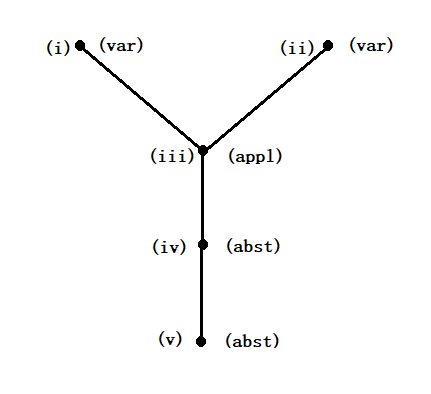
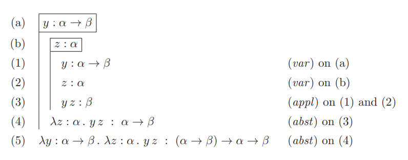
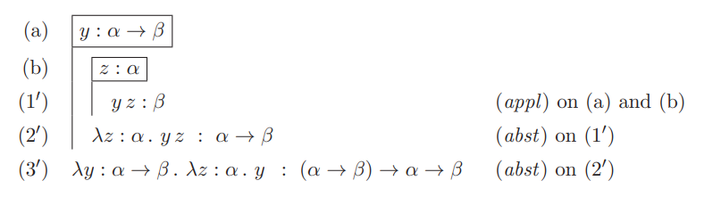
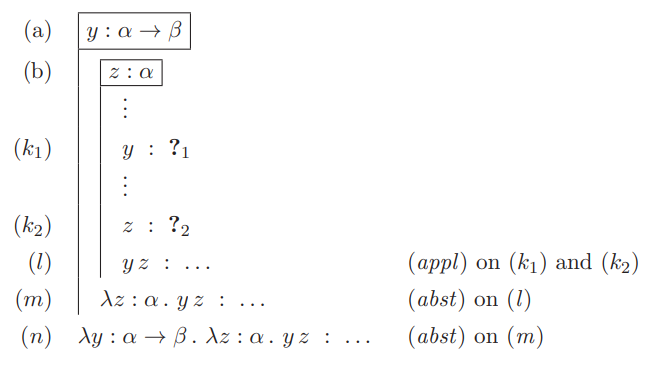
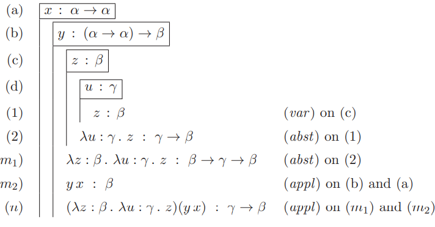
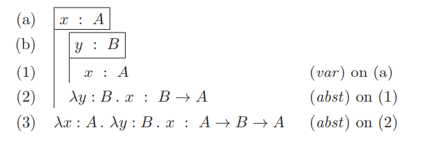

简单类型的lambda演算(Simple typed lambda calculus)
无类型的lambda演算过于自由,为了更好控制函数的行为,我们引入类型
简单类型(simple types)
类型的定义与 \(\lambda-\) 项的定义类似,都是从一个无穷集合变量出发,通过生成规则,得到更复杂的元素.不同的是,简单类型的初始集合中的元素称为类型变量(type variables).设这个类型变量集合为\(V = \{\alpha , \beta , \gamma , \dots \}\),生成的简单类型的集合为 \(T\).
\( \begin{aligned} & 定义 \ \ \ (The \ set \ T \ of \ all \ simple \ types) \\ & (1) (类型变量) \ 如果 \ \alpha \in V , 那么 \ \alpha \in T , \\ & (2) (箭头类型) \ 如果 \ \sigma , \tau \in T , 那么 \ (\sigma \rightarrow \tau ) \in T. \\ \end{aligned} \)
使用抽象语法也可以写成\(T = V | T \rightarrow T\).
规定:
表达式最外层括号可以省略.
箭头类型是右结合的,例如\(\alpha_1 \rightarrow \alpha_2 \rightarrow \alpha_3 \equiv \alpha_1 \rightarrow (\alpha_2 \rightarrow \alpha_3)\).
为了表达项\(M\)拥有类型\(\sigma\)’,我们引入了定型陈述(typing statements),写作 ‘\(M:\sigma\)’.
我们假定对于每个类型\(\sigma\)都有无穷个变量,且不同类型间的变量不会重复, 即唯一性——\(若 \ x : \sigma \ 且 \ x : \tau , 则 \ \sigma \equiv \tau\).
回顾无类型lambda演算,其\(\lambda-\)项的构造方法有应用和抽象,对于含有类型的项来说,需要规则来指定应用和抽象后的类型.
\( \begin{aligned} & 定义 \ \ \ (typing \ of \ applications \ and \ abstractions) \\ & (1) (应用) \ 如果 \ M : \sigma \rightarrow \tau \ 且 \ N : \sigma , 那么 \ MN : \tau , \\ & (2) (抽象) \ 如果 \ x : \sigma \ 且 \ M : \tau , 那么 \ \lambda x \ . M : \sigma \rightarrow \tau \\ \end{aligned} \)
注意:
类型给\(\lambda-\)项的构造增添了附加条件,对于应用\(y x\)而言,只有在\(y\)是一个箭头类型,且\(x\)的类型与\(y\)类型中第一个类型变量一致时,\(y x\)才可以被定型.
这也导致了不允许自我应用(self-application),若不然,设 \(x:\sigma\),则由于\(xx\)可定型,则又有\(x : \sigma \rightarrow \tau\),但是这样就违反了前面的唯一性假设.
显然,不是所有的\(\lambda-\)项都可定型(typable).
\( \begin{aligned} & 定义 \ (Typable \ term) \ \ \ & 对于一个项M,如果存在一个类型\sigma,使得M:\sigma,那么称这个项为可定型的. \end{aligned} \)
Church 定型 与 Curry 定型 (Church-typing and Curry-typing)
对\(\lambda-项\)定型首先需要对其变量进行定型,这里介绍两种的定型方法.
Church 定型: 在引入变量时就为其规定唯一的类型,这种定型又称为显式定型(explicit typing).
Curry 定型: 不提供变量的类型, 通过搜索过程’猜测’变量的类型,又称为隐式定型(implicit typing).
示例:
(显式定型) 设\(x\)的类型为 \(\alpha \rightarrow \alpha\), \(y\)的类型为 \((\alpha \rightarrow \alpha) \rightarrow \beta\), \(z\)的类型为 \(\beta\), u的类型为 \(\gamma\), 则 \(yx\)的类型为\(\beta\), \(\lambda zu \ . z\)的类型为 \(\beta \rightarrow \gamma \rightarrow \beta\),因此 \((\lambda zu \ . z) (yx)\)的类型为 \(\gamma \rightarrow \beta\) .
(隐式定型) 仍然考虑 \(M \equiv(\lambda zu \ . z) (yx)\), 变量\(x,y,z,u\)的类型尚未给出.
首先, M是\((\lambda zu \ . z) \) 对 \((yx)\)的应用, 所以\(\lambda zu \ . z\)是一个箭头类型,设为\(A \rightarrow B\),且\(yz\)类型必须为\(A\),此时\(M\)类型为\(B\).
对于 \(\lambda zu \ . z : A \rightarrow B\),可以推断出\(z : A\)且 \(\lambda u \ . z : B\).对于后者,其仍然是一个箭头类型, 因此 \(B \equiv (C \rightarrow D)\), 且 \(u : C , \ z : D\).
对于 \(yz\),可以推断出\(y : E \rightarrow F\)且 \(x : E\) , 因此 \(yz : F\).
综上,有:
\(x : E\)
\(y : E \rightarrow F\)
\(z : A , \ z : D\) (所以 \(A \equiv D\))
\(u : C\)
\(B \equiv (C \rightarrow D)\)
\(yx : A , \ yz : F\) (所以 \(A \equiv F\))
最终结果为
(*) \(x : E , y : E \rightarrow A , z : A , u : C\)
为了清晰的表述, 我们将约束变量的类型标注在首次引入改变量的后面(即\(\lambda后对应的变量\)),而自由变量的类型则由上下文(context)给出,其顺序可以随意选择,最终得到的表述称为推断(judgement). 如Church定型示例写为 \(x : \alpha \rightarrow \alpha , y : (\alpha \rightarrow \alpha) \rightarrow \beta \ \vdash \ (\lambda z : \beta \ . \lambda u : \gamma \ . z)(y x)\) 就是一个推断.
Church \(\lambda\rightarrow\)的派生规则(Derivation rules for Church’s \(\lambda\rightarrow\))
添加了类型信息后,需要对\(\lambda-\)项的定义稍加修改.对于类型集合\(T\),设新的\(\lambda-\)项的集合为\(\Lambda_T\),我们称这个集合为预标注类型\(\lambda-\)项(pre-typed \(\lambda-\)terms).使用抽象语法描述如下:
\( \begin{aligned} & 定义 \ (Pre-typed \ \lambda-terms,\Lambda_T) \ \ \ \Lambda_T = V | (\Lambda_T \Lambda_T) | (\lambda V : T \ . \Lambda_T ) \\ \end{aligned} \)
提示: 之所以称为预标注类型,是因为集合中的元素带有类型信息,但不一定是可定型的,后面通过派生规则将解决这个问题
我们在前面已经提到过陈述和上下文的概念,下面正式给出相关概念.
\( \begin{aligned} & 定义 \ \ \ (Statement,\ declaration,\ context,\ judgement) \\ & (1) \ 陈述具有\ M : \sigma 的形式,其中 M \in\Lambda_T 且 \sigma \in T. 在陈述中,M称为主体(subject),\sigma 称为类型(type). \\ & (2) \ 声明是以变量为主体的陈述. \\ & (3) \ 上下文是主体不同的声明组成的列表. \\ &(4) \ 推断具有 \ \Gamma \vdash M : \sigma ,\ 其中 \Gamma为上下文 ,\ M : \sigma为陈述. \end{aligned} \)
为了判定在某个上下文\(\Gamma\)中一个项\(M : \sigma\)是否是可定型的,即推断 \(\Gamma \vdash M : \sigma\) 是否可派生(derivable), 我们引入了派生规则,通过派生规则形成了派生系统(derivation system).
\( \begin{aligned} & 前提-结论格式 \ \ \ (premiss-conclusion \ format) \\ & \frac{前提1 \ 前提2 \ \dots \ 前提n}{结论} \end{aligned} \)
\( \begin{aligned} & 定义 \ \ \ (Derivation \ rules \ for \ \lambda \rightarrow) \\ & (变量) \ 如果 x : \sigma \in \Gamma , \ 则 \Gamma \vdash x : \sigma \\ & (应用) \ \frac{\Gamma \vdash M : \sigma \rightarrow \tau \ \ \ \ \ \ \Gamma \vdash N : \sigma}{\Gamma \vdash \lambda x : \sigma \ . M : \sigma \rightarrow \tau}\\ & (抽象) \ \frac{\Gamma , x:\sigma \vdash M : \tau}{\Gamma \vdash \lambda x : \sigma \ . M : \sigma \rightarrow \tau}\\ \end{aligned} \)
\( \begin{aligned} & 定义 \ (Legal \ \lambda\rightarrow-terms) \ \ \ 在\lambda\rightarrow中,对于一个预标注类型的项M,如果存在上下文\Gamma以及类型\rho, \\ & 使得 \Gamma \vdash M : \rho , 则称M为合法的. \\ \end{aligned} \)
派生的不同格式(Different formats for a derivation in \(\lambda \rightarrow\))
树状结构(tree structure)
遵循派生规则的派生拥有天然的树状结构.
考虑以下示例: \( \begin{array}{c} (i) \ y : \alpha \rightarrow \beta , z : \alpha \vdash y : \alpha \rightarrow \beta \ \ \ \ \ \ (ii)\ y : \alpha \rightarrow \beta . z : \alpha \vdash z : \alpha \ (var) \\ \hline (iii) \ y : \alpha \rightarrow \beta , z : \alpha \vdash y z : \beta \ \ (appl) \\ \hline (iv) \ y : \alpha \rightarrow \beta \vdash \lambda z : \alpha \ . yz : \alpha \rightarrow \beta \ \ (abst) \\ \hline (v) \ \emptyset \vdash \lambda y : \alpha \rightarrow \beta \ . \lambda z : \alpha \ . y z : (\alpha \rightarrow \beta) \rightarrow \alpha \rightarrow \beta \ \ (abst) \end{array} \)
其对应的树状结构为

尽管树状结构很好地展示了派生的形成,但对于更复杂的情形,树可能过大而难以阅读.
线性结构(linear order)
线性结构一定程度上解决树状结构的问题.以上示例用线性结构书写为: \( \begin{aligned} (i) \ & y : \alpha \rightarrow \beta , \ z : \alpha \vdash y : \alpha \rightarrow \beta \ & (var) \\ (ii) \ & y : \alpha \rightarrow \beta , \ z : \alpha \vdash z : \alpha \ & (var) \\ (iii) \ & y : \alpha \rightarrow \beta , \ z : \alpha \vdash yz : \beta & (appl) \ on \ (i) \ and \ (ii) \\ (iv) \ & y : \alpha \rightarrow \alpha , \ \vdash \lambda z : \alpha \ . yz : \alpha \rightarrow \beta & (abst) \ on \ (iii) \\ (v) \ & \emptyset \vdash \lambda y : \alpha \rightarrow \beta \ . \lambda z : \alpha \ . yz : (\alpha \rightarrow \beta) \rightarrow \alpha \rightarrow \beta & (abst) on (iv) \end{aligned} \)
通过线性结构,容易发现派生实际上是一种严格偏序关系,即遵循反自反性,反对称性以及传递性.
旗子标注(flag notation)
在线性结构中,每一行都需要书写上下文,这些上下文中有很多重复内容,对于更复杂的派生将会很麻烦.可以使用旗子标注替换线性结构.
在旗子标注中,我们需要将声明放在矩形框内(flag),并假定这个声明是其对应旗杆(flag pole)后所有声明的上下文.

通常情况下我们可以省略掉(var)过程使其更简洁.

类型论中需要解决的几类问题(Kinds of problems to be solved in type theory)
总体来说,与推断相关的问题可分为三类.
良类型性(well-typedness)或可定型性(typability)
\(? \vdash term : ?\)
如果term合法,找出恰当的上下文和类型使得term是合法的;否则找出出错的地方.
良类型性问题的一种变体是类型赋值.
类型赋值(type assignment)
\(context \vdash term : ?\)
类型检查(type checking)
\(context \overset{?}{\vdash} term : type\)
给定上下文、项和类型,检查在某个上下文下,某个项是否具有某个类型.
项的寻找(type finding/term construction/inhabitation)
\(context \vdash ? : type\)
在给定上下文情况下,找出是否有具有给定类型的项.
特别地,当\(content \equiv \emptyset\)时,此时寻找一个具有类型\(\sigma\)的项与\(\sigma\)的可证明性等价.本章中我们主要考虑这种情况,对于许多更复杂的情况,没有一种通用的方法来进行项的寻找.
\(\lambda\rightarrow\)中的良类型性(Well-typedness in \(\lambda\rightarrow\))
沿用派生风格一段中的示例,我们要证明 \(M \equiv \lambda y : \alpha \rightarrow \beta \ . \lambda z : \alpha \ . y z\)是合法的.即需要找到上下文 \(\Gamma\)和类型\(\rho\).
首先M中没有自由变量,所以推测上下文是\(\emptyset\). 因此任务变为了\(\lambda y : \alpha \rightarrow \beta \ . \lambda z : \alpha \ . yz : ?\).
根据派生规则,只有抽象规则可以使用, 此时任务变为\(y : \alpha \rightarrow \beta \vdash \lambda z : \alpha : \alpha \ . yz : ?\).
继续使用抽象规则,得到\(y : \alpha \rightarrow \beta , z : \alpha \vdash yz:?\).
yz是一个应用,使用抽象规则,得到\(y : \alpha \rightarrow \beta , z : \alpha \vdash y : ?_1\)和\(y : \alpha \rightarrow \beta , z : \alpha \vdash z : ?_2\).
使用变量规则,可知\(?_1 \equiv \alpha \rightarrow \beta , ?_2 \equiv \alpha\).
接下来进行回代,最终得到\(\rho \equiv (\alpha \rightarrow \beta) \rightarrow \alpha \rightarrow \beta\).
至此得到\(\Gamma \equiv \emptyset , \rho \equiv (\alpha \rightarrow \beta) \rightarrow \alpha \rightarrow \beta\).
以上推导写成旗子标注格式为:

\(\lambda\rightarrow\)中的类型检查
沿用两种定型中的示例\(M \equiv x : \alpha \rightarrow \alpha , y : (\alpha \rightarrow \alpha) \rightarrow \beta \vdash (\lambda z : \beta \ . \lambda u : \gamma \ . z)(yx) : \gamma \rightarrow \beta\),我们要验证这个推断是否正确.
使用应用规则得到
\(x : \alpha \rightarrow \alpha , y : (\alpha \rightarrow \alpha) \rightarrow \beta \vdash \lambda z : \beta \ . \lambda u : \gamma \ . z : ?_1\)
和
\(x : \alpha \rightarrow \alpha , y : (\alpha \rightarrow \alpha) \rightarrow \beta \vdash yx : ?_2\).
对于\(?_2\)使用两次变量规则即可解决\((\equiv \beta)\).下面解决\(?_1\).
对推断不断使用抽象规则,得到\(x : \alpha \rightarrow \alpha , y : (\alpha \rightarrow \alpha) \rightarrow \beta , z : \beta , u : \gamma \vdash z : ?\).
再使用变量规则,就解决了\(?_2 (\equiv \beta \rightarrow \gamma \rightarrow \beta)\).
最后,检验$M$成立的条件满足.
自此我们得到这个推断的完整派生,即这个推断是正确的.
以上推导写成旗子标注为:

\(\lambda\rightarrow\)项的寻找
当一个项属于某个类型的时候,我们说这个项是这个类型的居民(inhabitant).因此,我们的目标就是寻找给定类型的一个居民.
考虑一个来源于逻辑表达式的类型,我们称这种类型为命题,此时该类型中的每个居民就编码了该命题的一个证明,即证明类型(命题)是正确的.
在逻辑表达式中, \( A \rightarrow B \rightarrow A\)为重言式(若A则(若B则A),亦永真式). 我们用\(\lambda\rightarrow\)形式化这个重言式的证明, 即将\(A \rightarrow B \rightarrow A\)作为一个类型, 尝试找到一个在空上下文中的居民.
初始我们的目标为
\(? : A \rightarrow B \rightarrow A\)
首先使用抽象规则,得
\(x : A \vdash ? : B \rightarrow A\)
再次使用抽象规则,得
\(x : A , y : B \vdash ? : A\)
使用变量规则,得
\(x : A , y : B \vdash x : A\).
对上式进行两次抽象操作,最终得到:
\(\lambda x : A \ . \lambda y : B \ . x : A \rightarrow B \rightarrow A\)
整个派生过程用旗子标注为:

用命题和证明的语言书写:
(a) 假设x是命题A的证明
(b)假设y是命题B的证明
(1)那么x仍然是A的证明
(2)因此将y映射到x的函数将A的证明映射到B的证明(比如 \(\lambda y : B \ . x\)证明了蕴含式\(B \rightarrow A\))
(3)最终,\(\lambda x : A \ . \lambda y : B \ . x\)证明了\(A \rightarrow B \rightarrow A\).
这样我们就将证明和逻辑表达式分别解释为了项和类型.这种解释叫做PAT-解释(PAT-interpretation,’propersitions as types ‘ and ‘proofs as terms’).
\(\lambda\rightarrow\)的性质(General properties of \(\lambda\rightarrow\))
\( \begin{aligned} & 定义 \ \ \ (Domain,dom,subcontext,\subseteq,permutation,projection,\upharpoonright) \\ & (1) (域) \ 如果 \ \Gamma \equiv x_1 : \sigma_1, \dots,x_n : \sigma_n, \ 则 \Gamma 的域或dom(\Gamma) 是 列表 (x_1,\dots,x_n). \\ & (2) (子上下文) \ 如果上下文\Gamma' 出现的全部声明都在\Gamma 中,\ 则称\Gamma'为\Gamma的子上下文. \\ & (3) (置换)\ 如果 上下文\Gamma'的全部声明都在\Gamma中,且\Gamma中的全部声明也在\Gamma'中,则称\Gamma' 是 \Gamma 的一个置换. \\ & (4) (投影) \ 如果 \Gamma 是一个上下文,且\Phi是一个变量的集合, 那么\Gamma在\Phi上的投影, \\ & 或者 \Gamma \upharpoonright \Phi(\equiv \Gamma') 是 \Gamma的一个子上下文,且满足 dom(\Gamma') = dom(\Gamma)\cap \Phi. \\ \end{aligned} \)
\( \begin{aligned} & 引理 \ (Free \ Variables \ Lemma) \ \ \ 如果 \Gamma \vdash L : \sigma , 则 FV(L) \subseteq dom(\Gamma) \end{aligned} \)
提示 : 证明采用结构归纳法,对派生规则三种情况分别尝试归纳
\( \begin{aligned} & 引理 \ \ \ (Thinning,Condensing,Permutation) \\ & (1) (稀释) \ 设 \Gamma' 和 \Gamma'' 为上下文,且满足 \Gamma' \subseteq \Gamma'';如果 \ \Gamma' \vdash M : \sigma , \ 则 \Gamma'' \vdash M : \sigma 也成立. \\ & (2) (压缩) \ 如果 \ \Gamma \vdash M : \sigma , 则 \Gamma \upharpoonright FV(M) \vdash M : \sigma 也成立. \\ & (3) (置换)\ 如果 \ \Gamma \vdash M : \gamma , 且 \Gamma' 是 \Gamma 的一个置换,则\Gamma'也是一个上下文,且满足\Gamma' \vdash M : \sigma . \end{aligned} \)
置换引理告诉我们,在\(\lambda \rightarrow\)中上线文声明的顺序并不重要,因此也可以用集合替代列表,这个集合被称为基(bases).之所以使用列表是因为后续更复杂的类型系统中存在依赖声明,此时顺序就变得非常重要.
\( \begin{aligned} & 引理 \ \ \ (Generation \ Lemma) \\ & (1) \ 如果 \ \Gamma \vdash x : \sigma , \ 那么 x : \sigma \in \Gamma. \\ & (2) \ 如果 \Gamma \vdash M N : \tau , \ 那么存在一个类型\sigma使得\Gamma \vdash M : \gamma \rightarrow \tau 且 \Gamma \vdash N : \gamma . \\ & (3) \ 如果 \Gamma \vdash \lambda x : \sigma \ . M : \rho , \ 那么存在\tau使得\Gamma, x : \sigma \vdash M : \tau 且 \rho \equiv \sigma \rightarrow \tau . \end{aligned} \)
\( \begin{aligned} & 引理 \ (Subterm \ Lemma) \ \ \ 如果M是合法的,那么M的每个子项都是合法的. \end{aligned} \)
\( \begin{aligned} & 引理 \ (Uniqueness \ of \ Types) \ \ \ 假设\Gamma \vdash M : \sigma 且 \Gamma \vdash M : \tau , \ 那么 \sigma \equiv \tau. \end{aligned} \)
\( \begin{aligned} & 引理 \ \ \ (Decidability \ of \ Well-typedness, \ Type \ Assignment, \ Type \ Checking \ and \ Term \ Finding ) \\ & 在 \lambda\rightarrow 中,以下问题是可判定的,\\ & (1) \ (良类型性) \ ? \vdash term : ?. \\ & (1a) \ (类型赋值) \ context \vdash term : ? . \\ & (2) \ (类型检查) \ context \overset{?}{\vdash} term : type . \\ & (3) \ (类型寻找) \ context \vdash ? : type. \end{aligned} \)
归约与\(\lambda\rightarrow\)(Reduction and \(\lambda\rightarrow\))
为了在\(\lambda\rightarrow\)进行归约,需要对相关概念进行调整.
在归约中,最核心的操作是替换,新的定义仅仅对(3)进行了调整,如下:
\( \begin{aligned} &定义 \ \ \ (Substitution \ in \ \lambda\rightarrow) \\ & (1a) \ x [x := N] \equiv N, \\ & (1b) \ 设 x \not \equiv y , 有y[x := N] \equiv y, \\ & (2) \ (PQ)[x := N] \equiv (P[x := N]) (Q [x := N]), \\ &(3) \ 如果 \lambda z : \sigma \ . \ P^{y \rightarrow z} 是\lambda y : \sigma \ . \ P 的\alpha-变体,且z \not \in FV(N), 则(\lambda y : \sigma \ . \ P)[x := N] \equiv \lambda z : \sigma \ . \ (P ^{y \rightarrow z}[x := N]) \end{aligned} \)
据此,我们有替换引理:
\( \begin{aligned} & 引理 \ (Substitution \ Lemma) \ \ \ 假设\Gamma' , x : \sigma , \Gamma'' \vdash M : \tau 且 \Gamma' \vdash N : \sigma , \ 则 \Gamma',\Gamma'' \vdash M[x:=N]:\tau. \end{aligned} \)
下面给出单步归约的定义
\( \begin{aligned} &定义 \ \ \ (One-step \ \ \beta-reduction,\ \rightarrow_\beta, \ for \ \Lambda_T) \\ & (基本) \ (\lambda x : \sigma \ . M) N \rightarrow_\beta M[x:=N] \\ & (兼容性) \ 如果 M \rightarrow_\beta N , 则 M L \rightarrow_\beta N L , L M \rightarrow_\beta L N 且 \lambda x : \tau \ . \ M \rightarrow_\beta \lambda x : \tau \ . \ N . \end{aligned} \)
对于多步归约以及\(\beta-\)转换(\(=_\beta\)),其定义沿用无类型lambda演算中的定义.
注意: 单步归约的 ‘基本’ 并没有要求N和x类型相同
CR定理对于\(\lambda\rightarrow\)系统来说仍然成立.
\( \begin{aligned} & 定理 \ (Church-Rosser \ Theorem; \ CR ; \ Confluence) \ \ \ Church-Rosser 性质仍然适用于 \lambda\rightarrow. \end{aligned} \)
\( \begin{aligned} & 推论 \ \ \ 设 M =_\beta N , 则存在L,使得M \twoheadrightarrow_\beta L 且 N \twoheadrightarrow_\beta L. \end{aligned} \)
在归约过程中,我们更关心类型的变化,即主体归约(Subject Recution).
\( \begin{aligned} & 定理 \ (Subject \ Reduction) \ \ \ 如果\Gamma \vdash L : \rho 且 \ L \twoheadrightarrow_\beta L', 那么 \Gamma \vdash L' : \rho. \end{aligned} \)
主体归约定理告诉我们在归约过程中,主体的类型不会改变(也就不会改变可定型性).
最后, 我们可以证明在\(\lambda\rightarrow\)中不存在无穷归约序列——强标准化定理或终止定理(Strong Normalisation Theorem or Termination Theorem).
\( \begin{aligned} & 定理 \ (Strong \ Normalisation \ Theorem \ or \ Termination \ Theorem) \ \ \ 每个合法的M都是强标准化的. \end{aligned} \)
总结
在无类型lambda演算中有一些不好的特性,这些特性在简单类型的lambda演算中已经消失.
在\(\lambda\rightarrow\)中, 不存在自我应用(self-application)的项.
若不然,假设\(MM\)是一个合法的项,于是根据定义,存在\(\Gamma 和 \tau\)使得 \(\Gamma \vdash M M : \tau\).由生成引理可知,存在一个类型\(\gamma\), 使得\(\Gamma \vdash M : \gamma \rightarrow \tau\)且\(\Gamma \vdash M : \gamma\). 因此根据唯一性引理,只能有\(\gamma \rightarrow \tau \equiv \gamma\).但根据规定这是不可能的.
一定存在\(\beta-\)标准型
这是强标准化定理的直接推论.
不是所有合法的\(\lambda-\)项都有不动点
设在上下文\(\Gamma\)中,存在某个函数\(F\),以及两个类型\(\sigma , \ \tau (\sigma \not \equiv \tau)\), 满足\(\Gamma \vdash F:\sigma \rightarrow \tau\).如若不然,则存在\(M\)使得\(FM =_\beta M\).根据主体归约定理,\(FM\)与\(M\)的类型相同,从而\(M\)具有类型\(\sigma\),同时还具有类型\(\tau\).于是根据唯一性引理,只能\(\sigma \equiv \tau\),这与前提\(\sigma \not \equiv \tau\)矛盾.